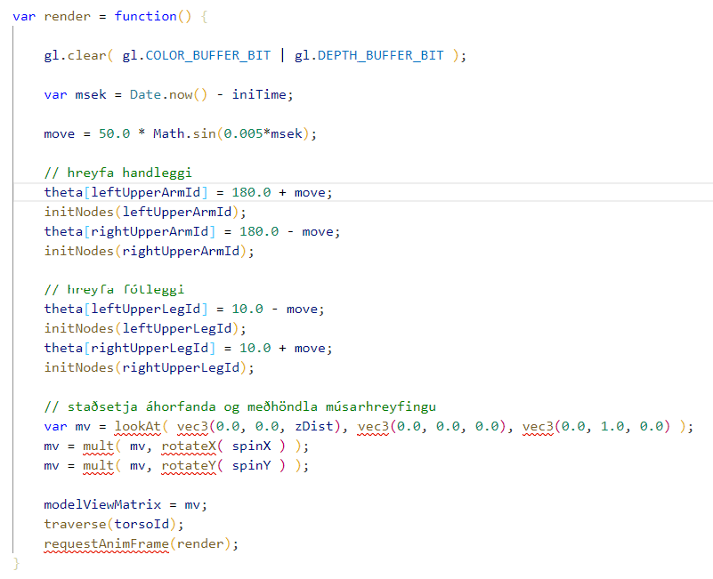

Nemandi: Ásdís Valtýsdóttir
a-liður: Hér áttum við að endurbæta forrit með því að búa til nýtt sjónarhorn. Nýja sjónarhornið er ný staðsetning á auganu, sem er ofan á húsi í hnitum (-40, 140) og það er alltaf fylgst með bílnum. Svipað og sjónarhorn 2 og 3 nema nú er staðsetning augans í (-14, 140, 16+height). Upphafsgildi z-hnits þarf að vera hærra en venjulega því annars værum við inni í húsinu.
b-liður:Hér áttum við að leyfa notandanum að snúali kaninu á meðann hann er í snjónarhorni 1. Núna þýðir færsla músar í x-átt (lárétt) að við snúum z-ás og færsla músar í y-átt þýður að við snýym um y-ás. Eins þarf snúningurinn að vera gerður eftr að búið er að kalla á lookAt fallið.
Í þessu dæmi átti maður að breyta forriti figureHH-col þannig að fígúran sé að hlaupa. Við breytum aðeins fjórum liðamótum: Efri handleggjum og efri fótleggjum (leftUpperArm, rightUpperArm, leftUpperLeg og rightUpperLeg). Útlimirnir eiga að sveiflast í takt, vinstri og hægri á móti hver öðrum og fætur og hendur í öfugum takti. Í forritinu er sínusfallið notað til þess að fá útlimina til að sveiflast fram og til baka. Athugið að það þarf að kalla á fallið initNodes eftir hverja breytingu á liðamótum. Það sem ég breytti í kóðanum var render fallið:
